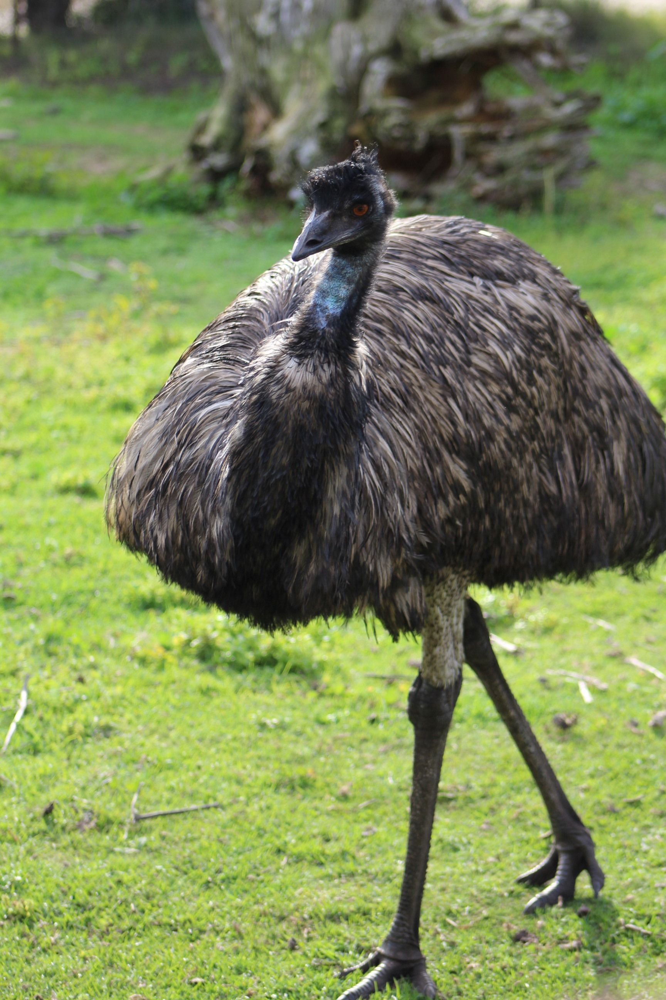

The Emu is Australia's tallest native bird and one of the world's largest living birds. It is flightless, with greatly reduced wings but extremely powerful legs adapted for running. Adults have shaggy grey-brown feathers, a long neck and a partly bare bluish-black head and neck. Emus are generally solitary outside the breeding period and can travel considerable distances when food or water becomes scarce. Their diet is varied and includes fruits, seeds, shoots, insects and other small animals. One of the most unusual aspects of their reproduction is that the male takes responsibility for incubating the eggs and caring for the young after the female leaves.